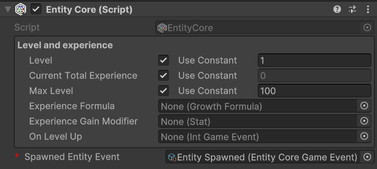

Workflows
Some utilities
Almost every class provided by this package uses events or variables in the form of ScriptableObject. Therefore, let's quickly introduce these concepts so that we are clear about what we are talking about when we encounter them in the following paragraphs.
Game events as ScriptableObjects
The SOAP architecture allows us to implement the Observer pattern through scriptable objects. In the simplest case, with events without context, we can define various game events as GameEvent instances: a class that derives from ScriptableObject. For example, we can create an instance called PlayerJumped that represents the event "The player has jumped". This event will notify all listening systems when it occurs.
Systems subscribe to this event using the MonoBehaviour GameEventListener. We can assign a GameEvent to this component, and it will handle the subscription and invoke a callback when the event is triggered. The callback is a UnityEvent, so we can select a callback to invoke in response to our event directly from the inspector.
For more details, see the Game Events section.
Int and Long Vars
Another common use of ScriptableObject in the SOAP architecture is to define variables. The main advantage of these variables in the form of SO is that they can be easily shared between various objects that may decide to share the same value. A common example is the player's game score. There could be a game manager that adds or removes points from this variable, while the UI HUD uses it to display its value on the screen. This way, we can keep the game manager and UI completely decoupled, passing shared values (like variables) through the inspector.
Int and Long Refs
IntRef and LongRef allow choosing whether to use a native value (int or long) or an IntVar/LongVar. As mentioned in the previous paragraph, IntVar and LongVar have the advantage of being shareable between different components/game objects, while native values are more immediate to use and require less setup (no need to instantiate an IntVar/LongVar and assign it in the inspector).
Make a GameObject an entity
To make a GameObject an entity, we need to add the MonoBehaviour EntityCore to it. Select your object from the hierarchy and click, in the inspector, on "Add component". Then search for and select EntityCore.
(TODO) Add image of the entity core
From the inspector, we can configure a series of values. Let's analyze them one by one.
Level: defines the level of the entity. By changing its value, we can assign a different level to the entity directly from the inspector. This can be useful for testing purposes.
You will notice the Use Constant checkbox. If checked, you can pass an IntVar instead of using a constant.
Current Total Experience: Represents the total experience possessed by the entity. This value cannot be modified.
Growth Formulas
As already mentioned in Introduction, GrowthFormula allows defining how a certain value varies as levels increase. A GrowthFormula can be instantiated through the hierarchy context menu by going to Simple RPG Core -> Growth Formula.
The package provides a custom property drawer for GrowthFormula.
For more details, see the Growth Formulas section.
Make a GameObject an entity
To make a GameObject an entity, we need to add the MonoBehaviour EntityCore to it. Select your object from the hierarchy and click, in the inspector, on "Add component". Then search for and select EntityCore.
(TODO) Add image of the entity core
From the inspector, we can configure a series of values. Let's analyze them one by one.
Level: defines the level of the entity. By changing its value, we can assign a different level to the entity directly from the inspector. This can be useful for testing purposes.
You will notice the Use Constant checkbox. If checked, you can pass an IntVar instead of using a constant.
Current Total Experience: Represents the total experience possessed by the entity. Being this a LongRef, you can choose whether to use a const value (a native long), or a LongVar instead.
Game events
The package also supports game events with up to 4 context parameters. They are generics, but in Unity, it is not possible to instantiate classes that derive from ScriptableObject if they are generics with unspecified type parameters. To use them, we must explicitly declare classes that derive from the generic GameEvent and fix the type parameters with concrete types. To simplify the definition of new event types, with specific types as context parameters, the package provides GameEventGenerator. These generators, which derive from SO, allow generating the concrete classes of GameEvent.
We will see these generators in more detail in the section (TODO).
Some game events are already defined and made available by the package (see the Samples page).
Int and Long Vars
Int and Long Refs
IntRef and LongRef allow choosing whether to use a native value (int or long) or an IntVar/LongVar. As mentioned in the previous paragraph, IntVar and LongVar have the advantage of being shareable between different components/game objects, while native values are more immediate to use and require less setup (no need to instantiate an IntVar/LongVar and assign it in the inspector).
Thanks to a custom property drawer, it will be possible, from the inspector, to check a checkbox named Use constant to use a native value instead of a Ref, and vice versa.
IntRef and LongRef are widely used in the package's MonoBehaviour.
Growth Formulas
As already mentioned in Introduction, GrowthFormula allows defining how a certain value varies as levels increase. A GrowthFormula can be instantiated through the hierarchy context menu by going to Simple RPG Core -> Growth Formula.
The package provides a custom property drawer for GrowthFormula.
Max level for the values
In the inspector of a GrowthFormula, we can pass an IntVar to define up to which level to grow the values.
Use constant at level one
If the checkbox named Use constant value at level 1 is checked, the respective constant value will be used.
Growth equations
The various values of the GrowthFormula are defined by a function where values, the y-axis, are expressed in function of the levels, the x-axis. Such function is defined as a system of equations. Each equation is a string that associates a math expression to a range of levels.
The string can be defined by using the Unity ExpressionEvaluator syntax. On top of it, the following terms can be used:
LVL: the level at each iterationPRV: the previous value of theGrowthFormula(value evaluated at the previous level)SPRV: the second previous value of theGrowthFormula(value evaluated 2 levels ago)SUM: the sum of the values of theGrowthFormulafrom level 1 up to the previous level
Make a GameObject an entity
Per rendere un GameObject un'entita' dobbiamo aggiungere il MonoBehaviour EntityCore ad esso. Seleziona il tuo oggetto dalla gerarchia e clicca, nell'inspector, su "Add component". quindi cerca e seleziona EntityCore.

Image - Entity Core Custom Editor
Dall'inspector possiamo configurare una serie di valori. Analizziamoli uno alla volta.
Level: definisce il livello dell'entita'. Cambiando il suo valore, possiamo assegnare un livello diverso all'entita' direttamente dall'inspector. Questo puo' essere utile per ai fini di testing.
Noterete il check box Use Constant. Se lo spuntate, potrete passare una IntVar anziche' usare una costante.
Current Total Experience: Rappresenta l'esperienza totale posseduta dell'entita'.
Warning
Se avete passato una LongRef per la current total experience, il valore contenuto in tale variabile non dovrebbe venire modificato a mano.
Se Use constant e' invece spuntato, il valore e' readonly.
Max Level: Il livello massimo raggiungibile dall'entita'
Exprerience Formula